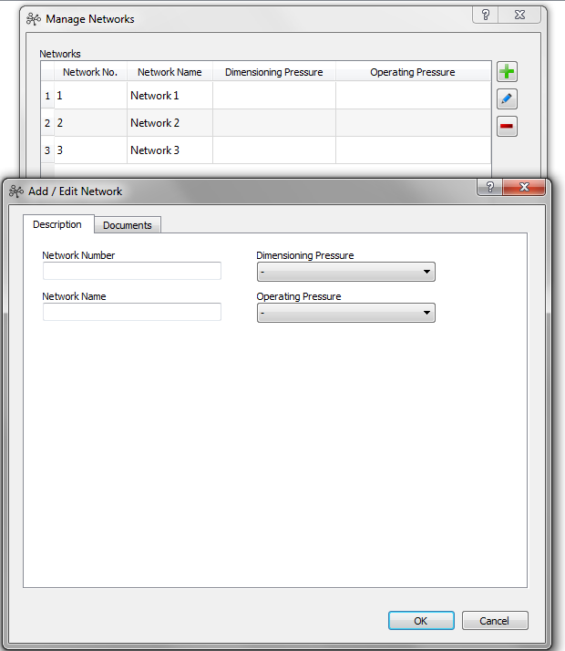

Manage Networks
Purpose:
Create, change or delete networks and their main
attributes.
To manage networks do the following steps:
- In the main menu click the "Manage networks" icon
- To add a new network choose the
following icon:

- To edit an existing network select the
network in the list and choose the following icon:

- To delete a network select the network
in the list and choose the following icon:


Figure 1:Manage networks